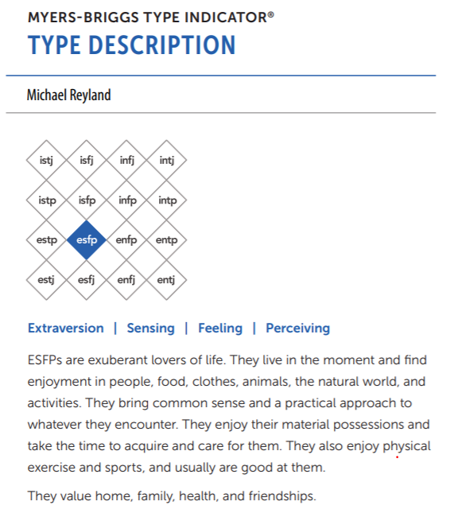
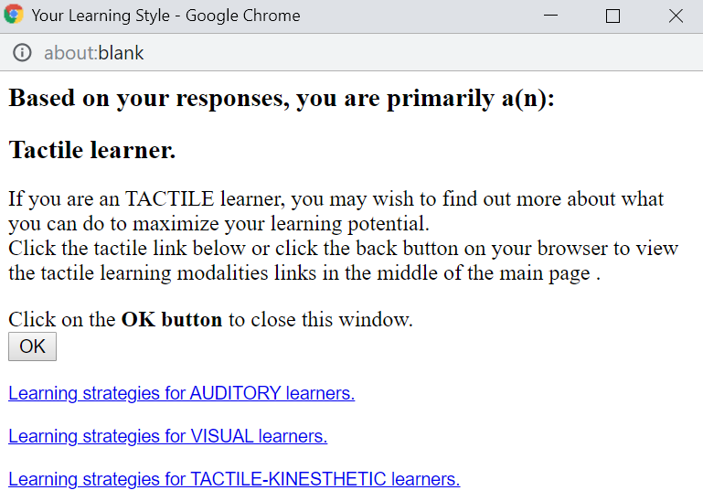
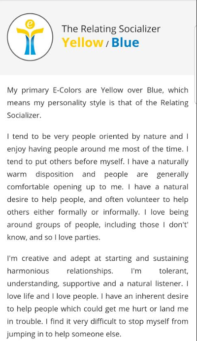

Personality Test Results
In this section we provide commentary on how the various personality test results may be helpful to the group. Our individual test results are summarised below, for more detailed information please visit our individual profile websites from Assignment 1.
How can these results help the team?
The test results weren't available at the time of forming teams for Assignment 2, so we were unable to realise the benefits of using the results to select a team and its members. Regardless, there is benefit in reviewing the results now the team is formed and Assignment 1 has been submitted. We are able to immediately learn something about our team members personalities and how they like to function in a team. This will help with forming the team dynamic and how we communicate with each other throughout the course of the group assignment, especially given most of our communication will be chat based via Microsoft Teams or RMIT Canvas.
Michael Reyland
Myers-Briggs
 To me the results of this test are interesting as I always believed that I was more introverted than extraverted. It is possible that given my last two leadership roles have been managing teams that are going through significant periods of change, my behaviour and potentially my personality has changed over time.
Learning Style Test
To me the results of this test are very much in line with what I expected. I know that I am not very good at retaining informing when reading, so generally I always try to experience things first hand. I have always thought that a strength of mine was the ability to do something once and then being confident of repeating in the future. 
Equilibria Report
To me this report further validates that my personality may have be changing to be more people focussed than I was previously. Interestingly I completed this report approximately five years ago for some training that my organisation was putting us through and at that time I my results showed that I was more focussed on results than people. It may be the case that spending such a large percentage of my career trying to lead teams through change has altered what I see as important. 
Ben Tomlinson
Myers-Briggs
The result of the “Myers-Briggs” test, is the “Adventurer” (16 personalities 2019 Adventurer). Adventurers are introverted, they’re hard to predict in a behavioural sense, often independent and opinionated. (16 personalities 2019 Adventurer). Some traits to the adventurer that are positive are: curiosity and validating their ideas; diplomatic and empathetic to others (16 personalities 2019 Adventurer). The test summary results indicated that adventurers: “use aesthetics, design and their choices and actions to push the limits of social convention. Adventurers enjoy upsetting traditional expectations” (16 personalities 2019 Adventurer). Results
VAK Test (PersonalityMax)
The learning test from personalitymax calculates percentages from three categories, which the strongest style of learning is after answering a set of questions. The learning test concluded the learning style category I’m suited to most is through physically involved activities (Kinesthetic) (personalitymax 2019). Through experience is the optimum method which is suited to the learning style (personalitymax 2019). Results
123Test Team Roles
The final test, a team rolls test conducted through 123Test is a basic assessment of what roles are suited to a person, and how likely suited they are to those roles based on percentages. The Three strongest roles indicated by the percentage of 17 for all are; Executive or organiser; Analyst; and Expert that prefers independence within a team (123Test 2019). The other attributes that i exhibit are dilligence, critical of tasks and can be defensive if others interfere and the last is analysing the best approach before acting. (123Test 2019). Results
Grant Dawson
16 Personalities
I have done many of these tests over the last few years and I always find it hard to decide how to answer, should I select how I really feel inside versus how I act because I know it is expected of me. For example, even though I am not always the most talkative in a room, I can attend a dinner party full of strangers and drive conversation if I need to make an impression or if everyone is very reserved. I also feel unconfident most of the time but no one would ever describe me as such as I like to drive team outcomes and lead decision making. These results for me ended up just as I expected, they don’t entirely line up with how I think of myself but in some areas the comments were spot on. One item to note is that the results tend to be centred close to the middle rather than being very decisive one way of the other. I believe this reflects my point above but also shows that I can be adaptable in a team, tailoring my behaviour to suit the team dynamic.
The 16 personalities test was particularly accurate, reflecting that I naturally feel introverted, focus on the past, am self-conscious and sensitive to stress. All of these traits I understand and I make efforts to work around them so they aren’t a detriment to my work or family life. Results
Learning Style Test
My learning style test showed I like to learn by doing which is true but I think the visual learning style could actually be my strongest. Results
Big Five
I found the big Five test least correct. I would have expected to score lower than 50% in Openness and much higher in Neuroticism. Results
SukhmanJeet Singh
????
Learning Style Test
Emotional intelligence
These tests collect personal data and can tell what personality an individual belongs to depending on their attributes and solutions to daily life problems. They can tell if a person is visionary or someone who thinks practically, if someone will learn best through visual images or by reading. These results can greatly matter in a team because they can determine who should be doing the designing and creative work, who should be the one crunching the numbers and who should be the leader. A creative person should be set to do the designing stuff for the project, someone who is a visual learner should handle the charts and someone who learns best through reading should handle the writing.